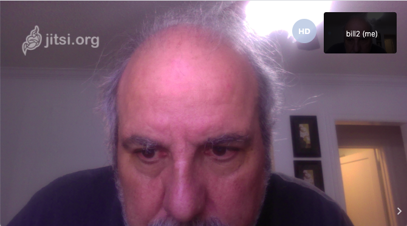
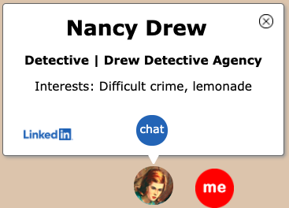
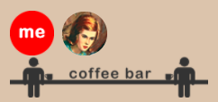
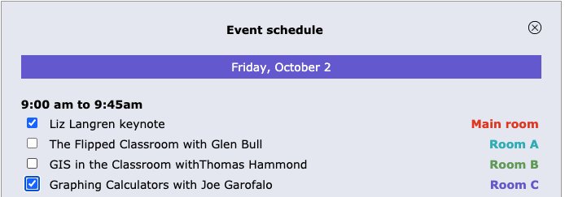

People go to academic and industry conferences for many reasons: They go to hear people talk, see product demonstrations, give papers, participate in panel discussions, and most importantly, meet with other people.
The pandemic took many by surprise and forced all conferences to go virtual. This typically means using Zoom or WebEx to create virtual rooms While these tools are very good at providing a forum for presenters, they offer little sense of place or community. Connecting with individual people is extremely difficult or even impossible.
èt•al is a new web app that brings a people-centered approach to virtual meetings, and importantly a sense of space. You log into a venue page that the meeting organizer has laid out to serve the meeting’s needs, with virtual meeting rooms and a virtual hallway.
Each attendee has a little icon of their face showing where they are in the venue. When you move the red "me" icon. other attendees will see your image move on their screens.
Clicking on a room joins the presentation via Zoom or live-streaming. Your icon is then moved into the room, until you go elsewhere.
The central hallway provides an opportunity to talk with the other attendees. You can click on their icons to see their “business card.”
When you see someone you want to talk with, you can ask to video chat with them, you will be connected with them via our built in video chat client, where you can invite an unlimited number to join you.
You can join random people at the variious "coffee bars" in the rooms, where a group video session is available with the people currently at the bar.
 Text chat Fully integrated text chat between attendees, with missed message box. You can respond by typing, speaking, or using a number of canned responses.
Text chat Fully integrated text chat between attendees, with missed message box. You can respond by typing, speaking, or using a number of canned responses.
 Video chat Seamlessly integrated video chat allows instant video chat with other attendees. Any number of people can be included in these meetings.

Business cards Clicking on a person’s icon brings up information about them, including their website and LinkedIn page, if they included them.

Virtual coffee bars -Serendipitous small group video chats with anyone else at the “coffee bars” found in most meeting rooms.
Quiet area - Going into the quiet area shields you from view and incoming chats.

Dynamic schedule - The meeting schedule controls what happens when in each of the rooms. You can choose the events you want to be reminded to attend.
Attendees list - A searchable list of all attendees that want to be public is available to make connections.
Help desk - Clicking on the Help Desk icon connects you with a person designated to aid attendees.
Completely customizable - Virtual venues are completely customizable with any number of room, color, textures, etc.
Meeting support - We support a large number of virtual meeting systems, including Zoom, WebEx, Jitsi, Teams, YouTube Live and others.
Meeting dashboard - Seamlessly integrated group video chats that with anyone else at the bars in found in most meeting rooms.
Native HTML5 web-app - A modern HTML5 web application and requires no plugs-ins or downloads.
AWS powered - Relies on the Amazon Web Service infrastructure for infinite scalability and high reliability.